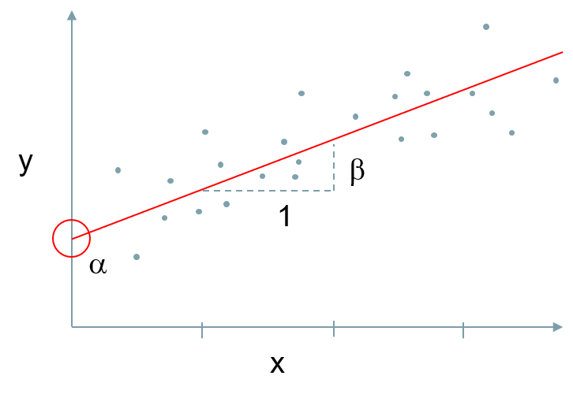

Poisson Distribution, increasing mean count

.pull-left[ ]
.pull-right[ Want to predict Y, using X: \[ y = \alpha + \beta x + \varepsilon\] + \(\alpha\)<U+F061> = Intercept + \(\beta\) = Coefficient (how much x affects y) + \(\varepsilon\)= Error (Residual)